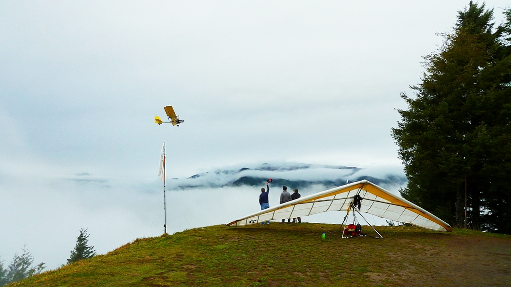

Welcome to Cloudbase Country Club

The origins of the Cloudbase Country Club date back to the 1970’s, when a group of pilots from the “North End Club” came together and gave the club its current name. There were other active clubs during that time, including the Pacific Northwest Hang Gliding Association (PNHGA), the Chandelle Northwest / Seattle Free Soaring Society, and the Flying Burrito Brothers. Over time the CBCC became stronger and is now the largest hang gliding club in this area, representing pilots primarily from the Pacific Northwest.
As land is being consumed and urban sprawl gives us fewer sites to fly, the CBCC’s primary purpose becomes apparent: to protect the flying sites that we have, and work towards securing more places to fly in our area. To that end, CBCC is a member club of the United States Hang Gliding and Paragliding Association (USHPA). As hang gliding has evolved and our society has become increasingly litigious, landowners have become more reluctant to let pilots launch and land on their soil. Being a member club of USHPA provides insurance for those landowners and allows us to allay some of their fears of being sued should something unfortunate happen on their land. CBCC and USHPA provide site insurance for two popular places to fly in western Washington – Tiger Mountain in Issaquah, and Dog Mountain to the south near Morton.
As pilots, we all start out with two bags. One is a bag full of luck and the other is an empty bag of experience. The trick is to fill the bag of experience before you empty your bag of luck. To most people, the sky is the limit. To those who love aviation, the sky is home. Fly yourself to the limits, but bring home your bag of experience and, please, share it.
– Anonymous
Get involved
- Flying Site Guides
Dog Mountain, Saddle Mountain, and Rampart Ridge. - Become a Member
Join CBCC and support our flying sites. - Calendar
Upcoming club events. - Donate
Help support site insurance and maintenance.